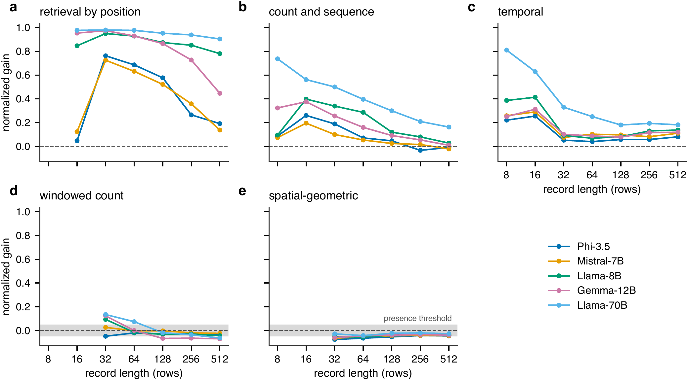
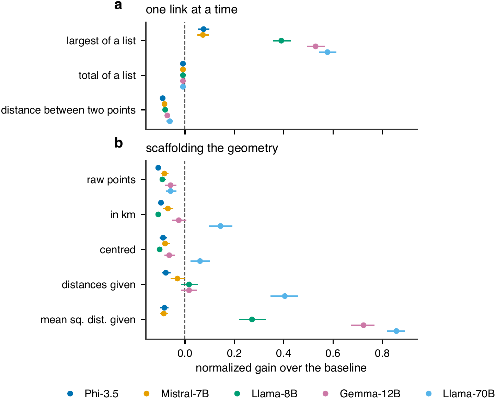
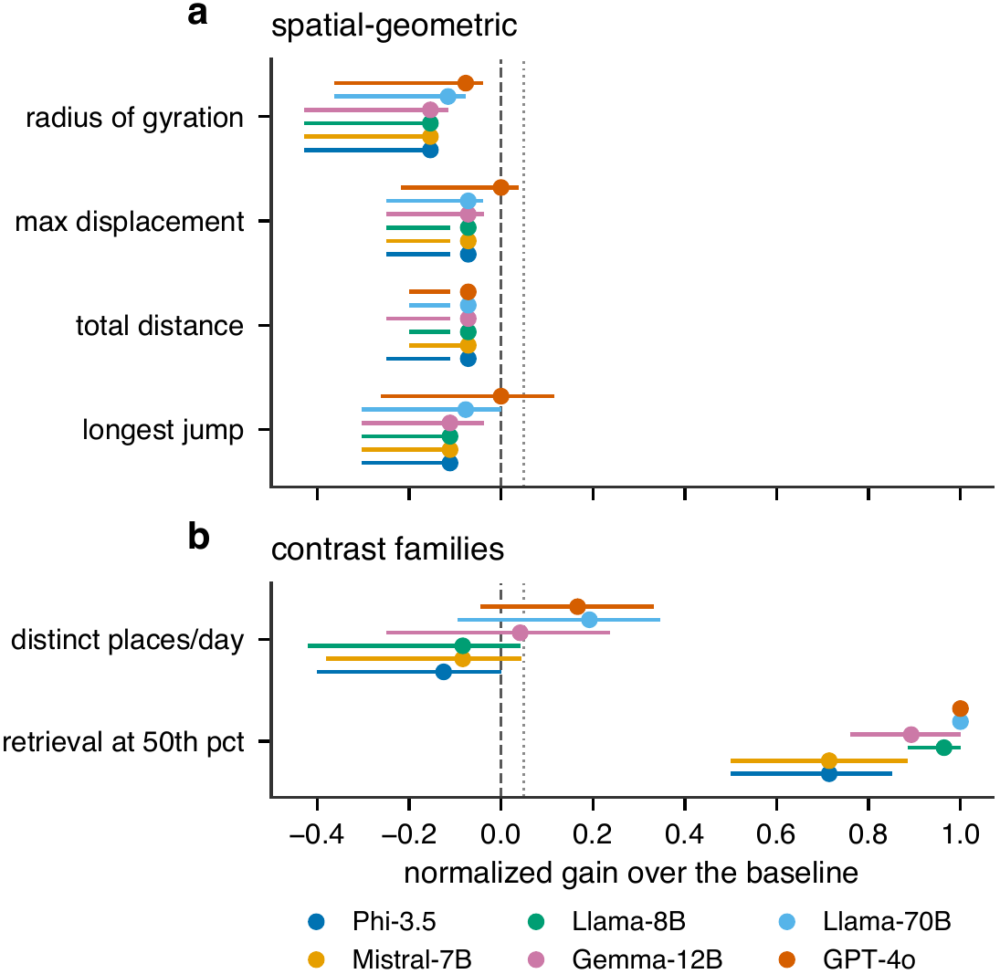

tl;dr On short records, count, sequence and retrieval descriptors come back. Stated directly, no spatial-geometric descriptor ever clears its baseline.
Four geometric families, five models, every record length from 32 to 512 rows. GPT-4o clears no geometric cell either.
§4.1
Of 105 model-family pairs, 47 clear their baseline on the longest record, 46 never do, and only 12 clear it and then stop.
§4.3
Rank correlation falls by 0.414 as the record grows around 16 items of state. At fixed length it does not fall as required state grows.
§4.3
Asked for Python, Llama-3.1-70B writes programs that match the reference on 50 held-out records: 1,155 of 1,155. Three of five models do this.
§4.7
They do so on geometric quantities in 75 of 100 settings. A permutation of the true values reproduces every distributional score while destroying every individual.
§4.1

Normalized gain by record length for each descriptor class. Figure 5 in the paper.

Largest of a list: every model clears. Distance between two points: none does. Figure 4 in the paper.

Same items, six models. GPT-4o leads on the contrast families and clears no geometric cell. Figure 3 in the paper.
This is the task the models get: read a record, then state its radius of gyration.
Here is a person’s location record. Each line is day, timeslot, place.
d23 t14 x-254 y-149
d23 t15 x-254 y-149
d23 t16 x-254 y-149
d23 t17 x-254 y-149
d23 t18 x-261 y-144
d23 t19 x-269 y-140
d23 t20 x-269 y-140
d23 t21 x-269 y-140
d23 t22 x-269 y-140
d23 t23 x-269 y-140
d23 t25 x-263 y-145
d23 t26 x-263 y-145
d23 t28 x-269 y-140
d23 t29 x-269 y-140
d23 t30 x-269 y-140
d23 t31 x-269 y-140
d23 t36 x-256 y-156
d23 t37 x-256 y-156
d23 t40 x-254 y-149
d23 t41 x-254 y-149
d23 t42 x-254 y-149
d24 t20 x-254 y-149
d24 t21 x-254 y-149
d24 t22 x-254 y-149
d24 t23 x-254 y-149
d24 t26 x-263 y-143
d24 t27 x-263 y-143
d24 t31 x-254 y-149
d24 t32 x-254 y-149
d24 t40 x-254 y-149
d24 t41 x-254 y-149
d24 t42 x-254 y-149
Question: Treating each unit on the x and y axes as 500 metres, what is the radius of gyration of this person’s locations, in kilometres?
You answer questions about location records. Reply with ONLY the value, on a single line of the form ‘Answer: <value>’. Do not explain. If you cannot determine the value, reply ‘Answer: unknown’. Here is a person’s location record. Each line is day, timeslot, place. d23 t14 x-254 y-149 d23 t15 x-254 y-149 ... Question: Treating each unit on the x and y axes as 500 metres, what is the radius of gyration of this person’s locations, in kilometres? The radius of gyration is the root-mean-square distance of the visited points from their mean position. Answer with a whole number of kilometres. Answer with the value only.
Exact answer: 4 km (4.014 before rounding)
Tolerance: none. A decimal scores wrong however close. Looser tolerances do not help: None exceeds the baseline at a tolerance of ±1 absolute or ±5, ±10 or ±25 percent relative.
Models: Asked to state a value directly under greedy decoding, spatial-geometric descriptors never clear their baseline, at any record length or tolerance we score.
@inproceedings{sameen2026gauge,
title = {{GAUGE}: How Large Language Models Recover Mobility Descriptors from Individual Records},
author = {Sameen, Mustafa},
booktitle = {Proceedings of the 2nd ACM SIGSPATIAL International Workshop on Urban Mobility Foundation Models},
series = {UMFM '26},
year = {2026},
address = {Riverside, CA, USA},
publisher = {ACM},
doi = {10.1145/3849729.3856126}
}